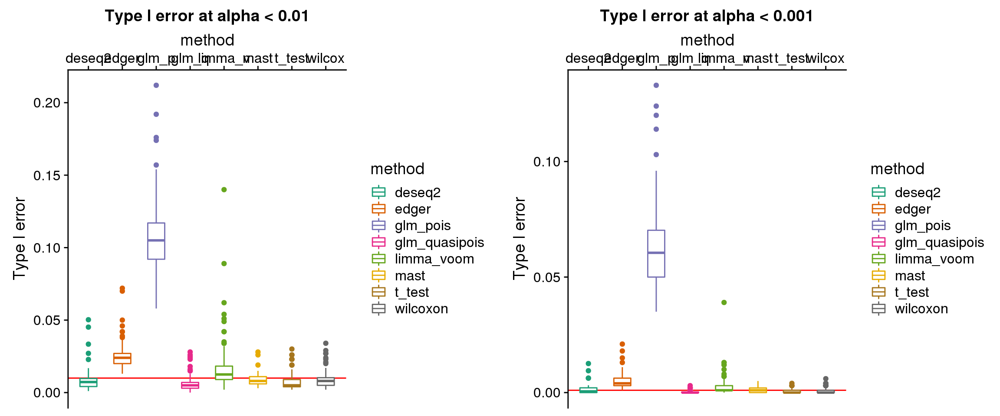
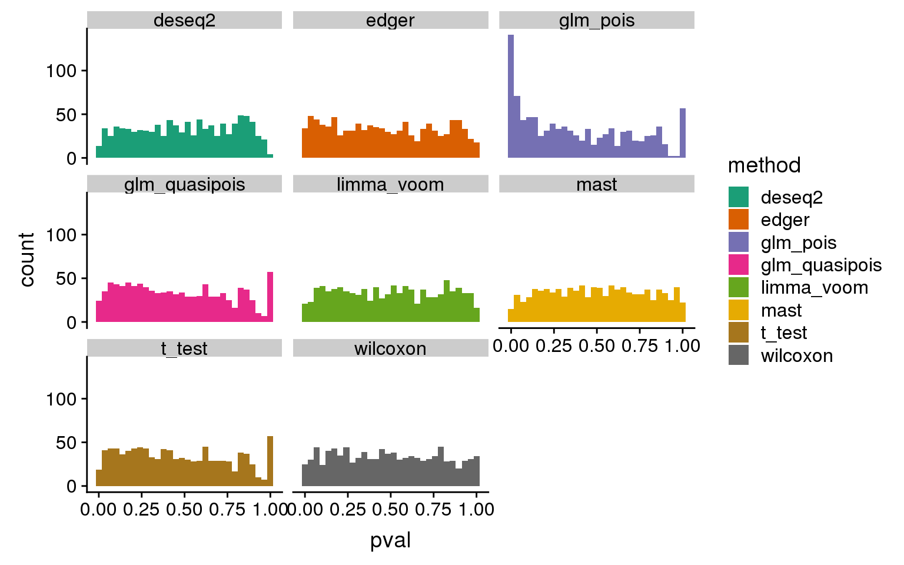
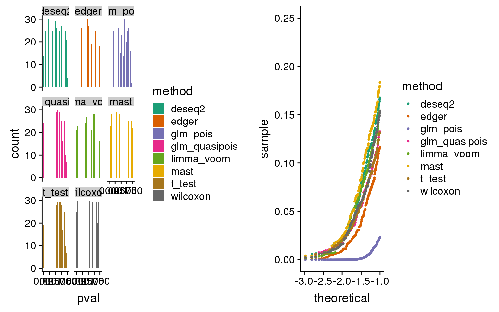
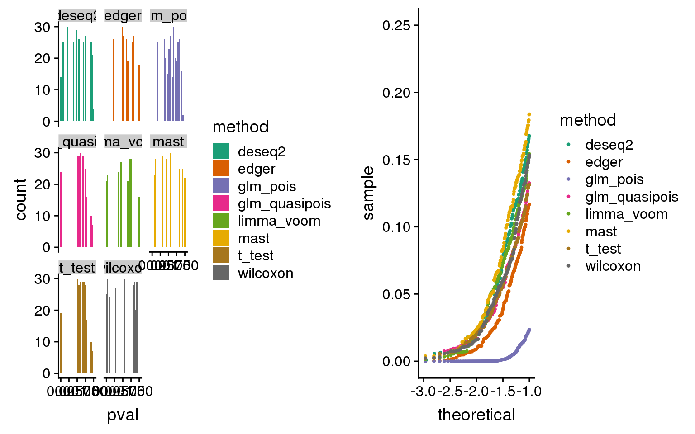
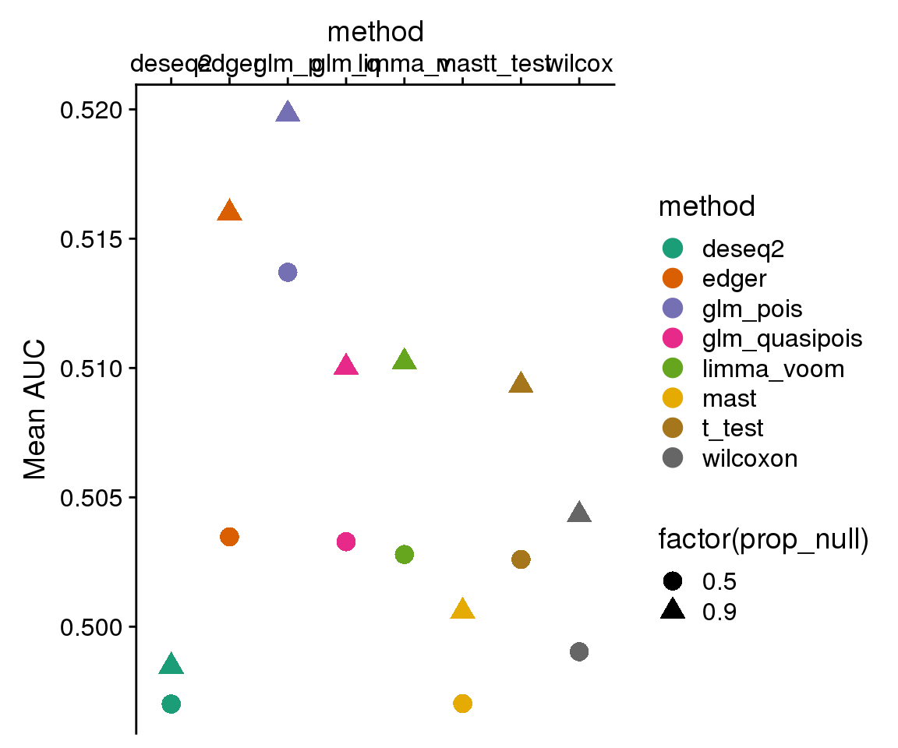
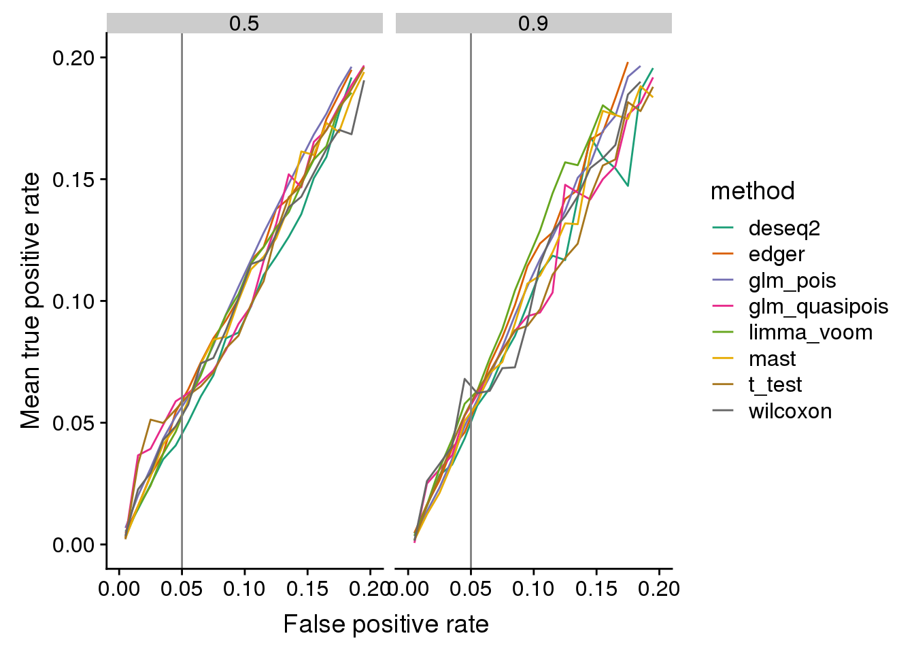

Initial method evaluation
Joyce Hsiao
2019-02-20
Last updated: 2019-02-26
Checks: 6 0
Knit directory: dsc-log-fold-change/
This reproducible R Markdown analysis was created with workflowr (version 1.2.0). The Report tab describes the reproducibility checks that were applied when the results were created. The Past versions tab lists the development history.
Great! Since the R Markdown file has been committed to the Git repository, you know the exact version of the code that produced these results.
Great job! The global environment was empty. Objects defined in the global environment can affect the analysis in your R Markdown file in unknown ways. For reproduciblity it’s best to always run the code in an empty environment.
The command set.seed(20181115) was run prior to running the code in the R Markdown file. Setting a seed ensures that any results that rely on randomness, e.g. subsampling or permutations, are reproducible.
Great job! Recording the operating system, R version, and package versions is critical for reproducibility.
Nice! There were no cached chunks for this analysis, so you can be confident that you successfully produced the results during this run.
Great! You are using Git for version control. Tracking code development and connecting the code version to the results is critical for reproducibility. The version displayed above was the version of the Git repository at the time these results were generated.
Note that you need to be careful to ensure that all relevant files for the analysis have been committed to Git prior to generating the results (you can use wflow_publish or wflow_git_commit). workflowr only checks the R Markdown file, but you know if there are other scripts or data files that it depends on. Below is the status of the Git repository when the results were generated:
Ignored files:
Ignored: .Rhistory
Ignored: .Rproj.user/
Ignored: .sos/
Ignored: analysis/.sos/
Ignored: dsc/.sos/
Ignored: dsc/benchmark/
Ignored: output/
Untracked files:
Untracked: analysis/sim_power_berge_pbmc_results.Rmd
Untracked: dsc/dsc_test/
Untracked: dsc/modules/methodLatentFactor.dsc
Untracked: dsc/modules/methodsLatentFactor.R
Untracked: dsc/test.csv
Untracked: dsc/test.dsc
Unstaged changes:
Modified: dsc/benchmark.dsc
Modified: dsc/modules/dataSimulate.R
Modified: dsc/modules/dataSimulate.dsc
Note that any generated files, e.g. HTML, png, CSS, etc., are not included in this status report because it is ok for generated content to have uncommitted changes.
There are no past versions. Publish this analysis with wflow_publish() to start tracking its development.
Introduction
Experimental data: PBMC of 2,683 samples and ~ 11,000 genes, including 7+ cell types. This data has large number of zeros (93% zeros in the count matrix).
- Simulation parameters
- p = 1000 genes
- N = 90 samples total, 45 samples per group
- 100 simulated datasets per scenario
- Simulation steps:
- Draw (sample without replacement) p genes and N samples from the experimental dataset.
- Assign samples to group 1 or 2 across genes
Methods included: edgeR, DESeq2, glm poisson, glm quasipoisson, limma + voom, MAST, t-test, wilcoson test
Preprocessing
knitr::opts_chunk$set(warning=F, message=F)extract dsc output and get p-values, q-values, true signals, etc.
get_pvals <- function(dir_dsc, dsc_files, verbose = F) {
dsc_files$method <- as.factor(dsc_files$method)
n_methods <- nlevels(dsc_files$method)
res <- vector("list",n_methods)
for (i in 1:nrow(dsc_files)) {
if (verbose) {print(i)}
fl_pval <- readRDS(file.path(dir_dsc,
paste0(as.character(dsc_files$method.output.file[i]), ".rds")))
fl_beta <- readRDS(file.path(dir_dsc,
paste0(as.character(dsc_files$data_poisthin.output.file[i]), ".rds")))
seed <- dsc_files$data_poisthin.seed[i]
prop_null <- dsc_files$data_poisthin.prop_null[i]
fl_qval <- readRDS(file.path(dir_dsc,
paste0(as.character(dsc_files$qvalue.output.file[i]), ".rds")))
res[[i]] <- data.frame(method = as.character(dsc_files$method)[i],
seed = seed,
pval = fl_pval$pval,
qval = fl_qval$qval,
truth_vec = fl_beta$beta != 0,
prop_null = prop_null,
stringsAsFactors = F)
}
res_merge <- do.call(rbind, res)
return(res_merge)
}
library(dscrutils)
dir_dsc <- "/scratch/midway2/joycehsiao/dsc-log-fold-change/benchmark"
dsc_res <- dscquery(dir_dsc,
targets=c("data_poisthin",
"data_poisthin.seed",
"data_poisthin.prop_null",
"method",
"qvalue"))
saveRDS(dsc_res, file = "output/eval_initial.Rmd/dsc_res.rds")
pvals_res <- get_pvals(dir_dsc, dsc_res)
saveRDS(pvals_res, file = "output/eval_initial.Rmd/pvals_res.rds")Some plotting and summary functions
# type I error related functions ----------
plot_oneiter_pval <- function(pvals_res_oneiter, cols, seed=1, bins=30) {
n_methods <- length(unique(pvals_res_oneiter$method))
print(
ggplot(pvals_res_oneiter, aes(x=pval, fill=method)) +
facet_wrap(~method) +
geom_histogram(bins=bins) +
# xlim(xlims[1],xlims[2]) +
scale_fill_manual(values=cols) )
}
plot_oneiter_qq <- function(pvals_res_oneiter, cols, plot_overlay=T,
title_label=NULL, xlims=c(0,1), pch.type="S") {
methods <- unique(pvals_res_oneiter$method)
n_methods <- length(methods)
if(plot_overlay) {
print(
ggplot(pvals_res_oneiter, aes(sample=pval, col=method)) +
stat_qq(cex=.7) +
scale_color_manual(values=cols) )
} else {
print(
ggplot(pvals_res_oneiter, aes(sample=pval, col=method)) +
facet_wrap(~method) +
stat_qq(cex=.7) +
scale_color_manual(values=cols) )
}
}
# power related functions ----------
get_roc_est <- function(pvals_res, fpr_nbin=100) {
method_list <- levels(factor(pvals_res$method))
seed_list <- unique(pvals_res$seed)
out_roc_est <- lapply(1:length(method_list), function(i) {
df_sub <- pvals_res %>% filter(method==method_list[i] & prop_null==prop_null)
roc_est_seed <- lapply(1:length(seed_list), function(j) {
roc_set_seed_one <- with(df_sub[df_sub$seed==seed_list[j],],
pROC::auc(response=truth_vec, predictor=qval))
fpr <- 1-attr(roc_set_seed_one, "roc")$specificities
tpr <- attr(roc_set_seed_one, "roc")$sensitivities
data.frame(fpr=fpr,tpr=tpr,seed=seed_list[j])
})
roc_est_seed <- do.call(rbind, roc_est_seed)
fpr_range <- range(roc_est_seed$fpr)
fpr_seq <- seq.int(from=fpr_range[1], to = fpr_range[2], length.out = fpr_nbin+1)
tpr_est_mean <- rep(NA, fpr_nbin)
for (index in 1:fpr_nbin) {
tpr_est_mean[index] <- mean( roc_est_seed$tpr[which(roc_est_seed$fpr >= fpr_seq[index] & roc_est_seed$fpr < fpr_seq[index+1])], na.rm=T)
}
fpr_bin_mean <- fpr_seq[-length(fpr_seq)]+(diff(fpr_seq)/2)
roc_bin_est <- data.frame(fpr_bin_mean=fpr_bin_mean,tpr_est_mean=tpr_est_mean)
roc_bin_est <- roc_bin_est[!is.na(roc_bin_est$tpr_est_mean),]
roc_bin_est$method <- method_list[i]
return(roc_bin_est)
})
out <- do.call(rbind, out_roc_est)
out$method <- factor(out$method)
return(out)
}Type I error between methods
library(tidyverse)
pvals_res <- readRDS("output/eval_initial.Rmd/pvals_res.rds")
plot_type1 <- function(pvals_res, alpha) {
n_methods <- length(unique(pvals_res$method))
cols <- RColorBrewer::brewer.pal(n_methods,name="Dark2")
pvals_res %>% filter(prop_null==1) %>%
group_by(method, seed) %>%
summarise(type1=mean(pval<alpha, na.rm=T), nvalid=sum(!is.na(pval))) %>%
ggplot(., aes(x=method, y=type1, col=method)) +
geom_hline(yintercept=alpha,
color = "red", size=.5) +
geom_boxplot(width=.5) +
ylab("Type I error") +
scale_x_discrete(position = "top",
labels=c("deseq2", "edger","glm_p", "glm_q",
"limma_v", "mast", "t_test", "wilcox")) +
scale_color_manual(values=cols) + ggtitle(paste0("Type I error at alpha < ",alpha))
}
library(cowplot)
plot_grid(plot_type1(pvals_res, alpha=.01),
plot_type1(pvals_res, alpha=.001))
p-value distribution
n_methods <- length(unique(pvals_res$method))
cols <- RColorBrewer::brewer.pal(n_methods,name="Dark2")
plot_grid(plot_oneiter_pval(pvals_res[pvals_res$seed == 2 & pvals_res$prop_null == 1, ],
cols=cols) + ylim(0,30),
plot_oneiter_qq(pvals_res[pvals_res$seed == 2 & pvals_res$prop_null == 1, ],
cols=cols, plot_overlay = T) + xlim(-3,-1) + ylim(0,.25) ) 

Power: Mean AUC
library(pROC)
pvals_res <- readRDS("output/eval_initial.Rmd/pvals_res.rds")
plot_roc <- function(roc_est, cols,
title_label=NULL) {
n_methods <- length(unique(roc_est$method))
print(
ggplot(roc_est, aes(x=fpr_bin_mean,
y=tpr_est_mean, col=method)) +
# geom_hline(yintercept=alpha,
# color = "red", size=.5) +
geom_step() +
scale_color_manual(values=cols)
)
}
# AUC ----------
plot_auc <- function(pvals_res) {
n_methods <- length(unique(pvals_res$method))
cols <- RColorBrewer::brewer.pal(n_methods,name="Dark2")
pvals_res %>% filter(prop_null != 1) %>%
group_by(method, prop_null,seed) %>%
summarise(auc_est=roc(response=truth_vec, predictor=qval)$auc) %>%
group_by(method, prop_null) %>%
summarise(auc_mean=mean(auc_est)) %>%
ggplot(., aes(x=method, y=auc_mean, col=method, shape=factor(prop_null))) +
geom_point(size=4) +
ylab("Mean AUC") +
scale_color_manual(values=cols) +
scale_x_discrete(position = "top",
labels=c("deseq2", "edger", "glm_p", "glm_q",
"limma_v", "mast", "t_test", "wilcox"))
}
plot_auc(pvals_res)
Power: ROC
# get estimated ROC
roc_est <- rbind(cbind(get_roc_est(pvals_res[pvals_res$prop_null==.9,]),prop_null=.9),
cbind(get_roc_est(pvals_res[pvals_res$prop_null==.5,]),prop_null=.5))
roc_est %>% group_by(prop_null) %>%
ggplot(., aes(x=fpr_bin_mean,
y=tpr_est_mean, col=method)) +
facet_wrap(~prop_null) +
geom_line() +
scale_color_manual(values=cols) + xlim(0,.2) + ylim(0,.2) +
geom_vline(xintercept=.05, col="gray50") +
xlab("False positive rate ") +
ylab("Mean true positive rate")
FDR control at .01
fdr_thres <- .01
n_methods <- length(unique(pvals_res$method))
cols <- RColorBrewer::brewer.pal(n_methods,name="Dark2")
pvals_res %>% group_by(method, seed, prop_null) %>%
filter(prop_null != 1) %>%
summarise(fdr_control = sum(qval < fdr_thres & truth_vec==F, na.rm=T)/sum(truth_vec==F)) %>%
ggplot(., aes(x=method, y=fdr_control, col=method)) +
facet_wrap(~prop_null) +
geom_violin() +
scale_color_manual(values=cols)
sessionInfo()R version 3.5.1 (2018-07-02)
Platform: x86_64-pc-linux-gnu (64-bit)
Running under: Scientific Linux 7.4 (Nitrogen)
Matrix products: default
BLAS/LAPACK: /software/openblas-0.2.19-el7-x86_64/lib/libopenblas_haswellp-r0.2.19.so
locale:
[1] LC_CTYPE=en_US.UTF-8 LC_NUMERIC=C
[3] LC_TIME=en_US.UTF-8 LC_COLLATE=en_US.UTF-8
[5] LC_MONETARY=en_US.UTF-8 LC_MESSAGES=en_US.UTF-8
[7] LC_PAPER=en_US.UTF-8 LC_NAME=C
[9] LC_ADDRESS=C LC_TELEPHONE=C
[11] LC_MEASUREMENT=en_US.UTF-8 LC_IDENTIFICATION=C
attached base packages:
[1] stats graphics grDevices utils datasets methods base
other attached packages:
[1] pROC_1.13.0 bindrcpp_0.2.2 cowplot_0.9.3 forcats_0.3.0
[5] stringr_1.3.1 dplyr_0.7.8 purrr_0.2.5 readr_1.3.1
[9] tidyr_0.8.2 tibble_1.4.2 ggplot2_3.1.0 tidyverse_1.2.1
loaded via a namespace (and not attached):
[1] tidyselect_0.2.5 haven_1.1.2 lattice_0.20-38
[4] colorspace_1.3-2 htmltools_0.3.6 yaml_2.2.0
[7] rlang_0.3.0.1 pillar_1.3.0 glue_1.3.0
[10] withr_2.1.2 RColorBrewer_1.1-2 modelr_0.1.2
[13] readxl_1.1.0 bindr_0.1.1 plyr_1.8.4
[16] munsell_0.5.0 gtable_0.2.0 workflowr_1.2.0
[19] cellranger_1.1.0 rvest_0.3.2 evaluate_0.12
[22] labeling_0.3 knitr_1.20 broom_0.5.0
[25] Rcpp_1.0.0 scales_1.0.0 backports_1.1.2
[28] jsonlite_1.6 fs_1.2.6 hms_0.4.2
[31] digest_0.6.18 stringi_1.2.4 grid_3.5.1
[34] rprojroot_1.3-2 cli_1.0.1 tools_3.5.1
[37] magrittr_1.5 lazyeval_0.2.1 crayon_1.3.4
[40] pkgconfig_2.0.2 xml2_1.2.0 lubridate_1.7.4
[43] assertthat_0.2.0 rmarkdown_1.10 httr_1.3.1
[46] rstudioapi_0.8 R6_2.3.0 nlme_3.1-137
[49] git2r_0.23.0 compiler_3.5.1